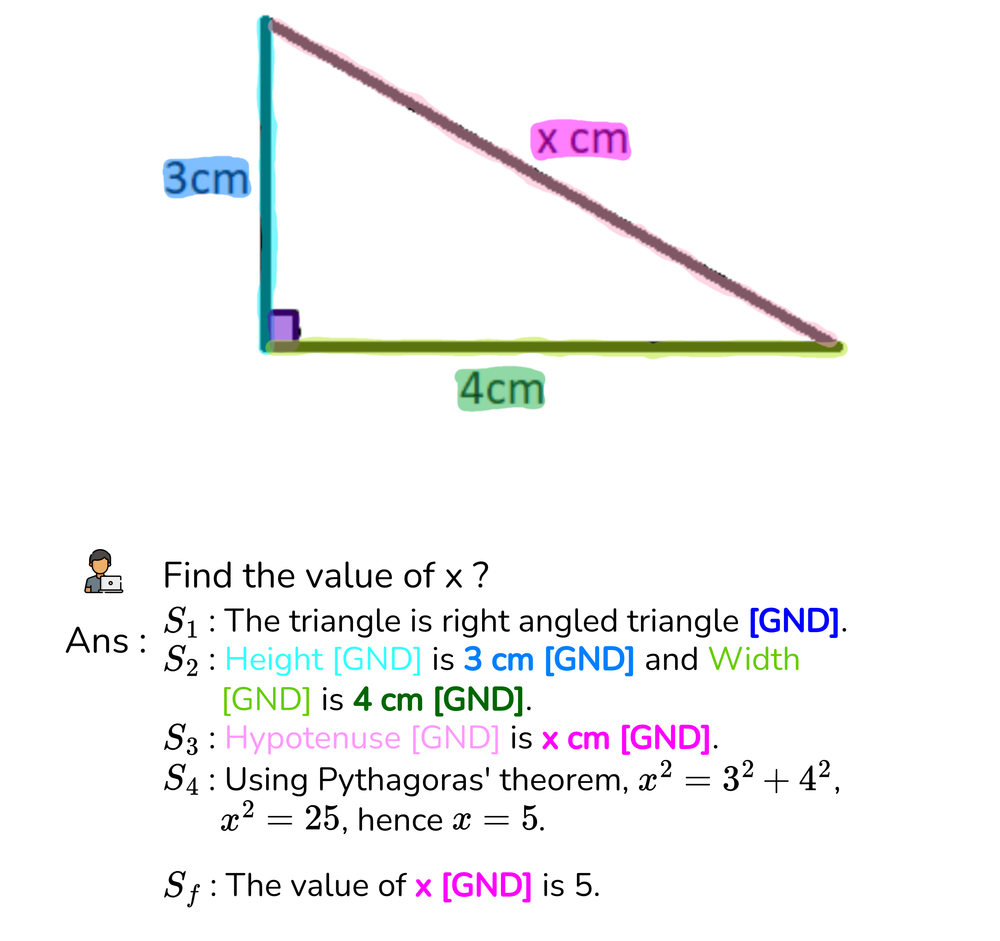
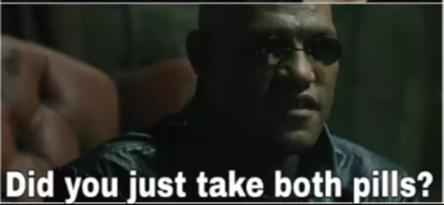

ECCV 2026 · Spotlight
DoCoG
Mask-based Multi-Type Grounded Chain-of-Thought for Document QA
Sai Madhusudan Gunda* · Jyothi Swaroopa Jinka* · Hrithik Sagar Rachakonda*
Aryan Jain† · Venkata Kesav Venna† · Anirudh Srinivasan · Ravi Kiran Sarvadevabhatla
*, † equal contribution · IIIT Hyderabad · BharatGen · docog-eccv.github.io
So — what is x?
The first question, answered

where — every value points to its pixels ✓
what — x = 5 ✓

Come find us.
Poster #106 · ExHall · Session 6 · 3:00 PM

docog-eccv.github.io